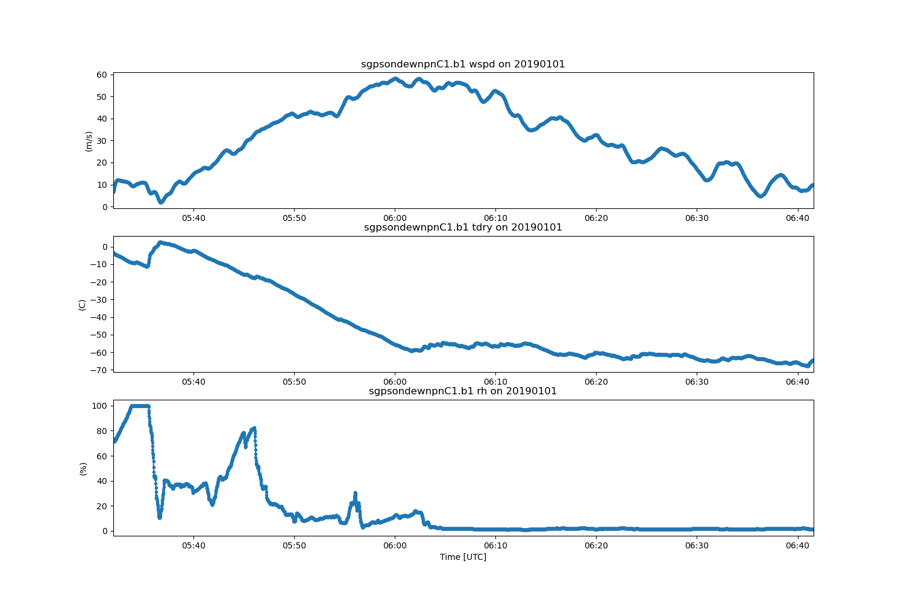

Note
Click here to download the full example code
Example on how to plot a timeseries of sounding data¶
This is a simple example for how to plot a timeseries of sounding data from the ARM SGP site.
Author: Robert Jackson
Out:
<xarray.Dataset>
Dimensions: (time: 10080)
Coordinates:
* time (time) datetime64[ns] 2019-01-01 ... 2019-01-07T23:59:00
Data variables:
base_time (time) datetime64[ns] 2019-01-01 ... 2019-01-07
time_offset (time) datetime64[ns] dask.array<chunksize=(1440,), meta=np.ndarray>
atmos_pressure (time) float32 dask.array<chunksize=(1440,), meta=np.ndarray>
qc_atmos_pressure (time) int32 dask.array<chunksize=(1440,), meta=np.ndarray>
temp_mean (time) float32 dask.array<chunksize=(1440,), meta=np.ndarray>
qc_temp_mean (time) int32 dask.array<chunksize=(1440,), meta=np.ndarray>
temp_std (time) float32 dask.array<chunksize=(1440,), meta=np.ndarray>
rh_mean (time) float32 dask.array<chunksize=(1440,), meta=np.ndarray>
qc_rh_mean (time) int32 dask.array<chunksize=(1440,), meta=np.ndarray>
rh_std (time) float32 dask.array<chunksize=(1440,), meta=np.ndarray>
vapor_pressure_mean (time) float32 dask.array<chunksize=(1440,), meta=np.ndarray>
qc_vapor_pressure_mean (time) int32 dask.array<chunksize=(1440,), meta=np.ndarray>
vapor_pressure_std (time) float32 dask.array<chunksize=(1440,), meta=np.ndarray>
wspd_arith_mean (time) float32 dask.array<chunksize=(1440,), meta=np.ndarray>
qc_wspd_arith_mean (time) int32 dask.array<chunksize=(1440,), meta=np.ndarray>
wspd_vec_mean (time) float32 dask.array<chunksize=(1440,), meta=np.ndarray>
qc_wspd_vec_mean (time) int32 dask.array<chunksize=(1440,), meta=np.ndarray>
wdir_vec_mean (time) float32 dask.array<chunksize=(1440,), meta=np.ndarray>
qc_wdir_vec_mean (time) int32 dask.array<chunksize=(1440,), meta=np.ndarray>
wdir_vec_std (time) float32 dask.array<chunksize=(1440,), meta=np.ndarray>
tbrg_precip_total (time) float32 dask.array<chunksize=(1440,), meta=np.ndarray>
qc_tbrg_precip_total (time) int32 dask.array<chunksize=(1440,), meta=np.ndarray>
tbrg_precip_total_corr (time) float32 dask.array<chunksize=(1440,), meta=np.ndarray>
qc_tbrg_precip_total_corr (time) int32 dask.array<chunksize=(1440,), meta=np.ndarray>
org_precip_rate_mean (time) float32 dask.array<chunksize=(1440,), meta=np.ndarray>
qc_org_precip_rate_mean (time) int32 dask.array<chunksize=(1440,), meta=np.ndarray>
pwd_err_code (time) float64 dask.array<chunksize=(1440,), meta=np.ndarray>
pwd_mean_vis_1min (time) float64 dask.array<chunksize=(1440,), meta=np.ndarray>
qc_pwd_mean_vis_1min (time) int32 dask.array<chunksize=(1440,), meta=np.ndarray>
pwd_mean_vis_10min (time) float64 dask.array<chunksize=(1440,), meta=np.ndarray>
qc_pwd_mean_vis_10min (time) int32 dask.array<chunksize=(1440,), meta=np.ndarray>
pwd_pw_code_inst (time) float64 dask.array<chunksize=(1440,), meta=np.ndarray>
qc_pwd_pw_code_inst (time) int32 dask.array<chunksize=(1440,), meta=np.ndarray>
pwd_pw_code_15min (time) float64 dask.array<chunksize=(1440,), meta=np.ndarray>
qc_pwd_pw_code_15min (time) int32 dask.array<chunksize=(1440,), meta=np.ndarray>
pwd_pw_code_1hr (time) float64 dask.array<chunksize=(1440,), meta=np.ndarray>
qc_pwd_pw_code_1hr (time) int32 dask.array<chunksize=(1440,), meta=np.ndarray>
pwd_precip_rate_mean_1min (time) float32 dask.array<chunksize=(1440,), meta=np.ndarray>
qc_pwd_precip_rate_mean_1min (time) int32 dask.array<chunksize=(1440,), meta=np.ndarray>
pwd_cumul_rain (time) float32 dask.array<chunksize=(1440,), meta=np.ndarray>
qc_pwd_cumul_rain (time) int32 dask.array<chunksize=(1440,), meta=np.ndarray>
pwd_cumul_snow (time) float32 dask.array<chunksize=(1440,), meta=np.ndarray>
qc_pwd_cumul_snow (time) int32 dask.array<chunksize=(1440,), meta=np.ndarray>
logger_volt (time) float32 dask.array<chunksize=(1440,), meta=np.ndarray>
qc_logger_volt (time) int32 dask.array<chunksize=(1440,), meta=np.ndarray>
logger_temp (time) float32 dask.array<chunksize=(1440,), meta=np.ndarray>
qc_logger_temp (time) int32 dask.array<chunksize=(1440,), meta=np.ndarray>
lat (time) float32 36.605 36.605 ... 36.605 36.605
lon (time) float32 -97.485 -97.485 ... -97.485
alt (time) float32 318.0 318.0 ... 318.0 318.0
Attributes:
command_line: met_ingest -s sgp -f E13
process_version: ingest-met-4.39-0.el6
dod_version: met-b1-7.3
input_source: /data/collection/sgp/sgpmetE13.00/Table1.201...
site_id: sgp
platform_id: met
facility_id: E13
data_level: b1
location_description: Southern Great Plains (SGP), Lamont, Oklahoma
datastream: sgpmetE13.b1
serial_number: 188
sampling_interval: variable, see instrument handbook
averaging_interval: 60 seconds
averaging_interval_comment: The time assigned to each data point indicat...
tbrg: Tipping Bucket Rain Gauge
pwd: Present Weather Detector
wind_speed_offset: 0.000000
wind_speed_slope: 0.098000
tbrg_precip_corr_info: 0.000000 * tbrg_precip_total^2 + 1.038000 * ...
qc_bit_comment: The QC field values are a bit packed represe...
qc_bit_1_description: Value is equal to missing_value.
qc_bit_1_assessment: Bad
qc_bit_2_description: Value is less than the valid_min.
qc_bit_2_assessment: Bad
qc_bit_3_description: Value is greater than the valid_max.
qc_bit_3_assessment: Bad
qc_bit_4_description: Difference between current and previous valu...
qc_bit_4_assessment: Indeterminate
history: created by user dsmgr on machine ruby at 201...
import act
from matplotlib import pyplot as plt
files = act.tests.sample_files.EXAMPLE_MET_WILDCARD
met = act.io.armfiles.read_netcdf(files)
print(met)
met_temp = met.temp_mean
met_rh = met.rh_mean
met_lcl = (20. + met_temp / 5.) * (100. - met_rh) / 1000.
met['met_lcl'] = met_lcl * 1000.
met['met_lcl'].attrs['units'] = 'm'
met['met_lcl'].attrs['long_name'] = 'LCL Calculated from SGP MET E13'
# Plot data
display = act.plotting.TimeSeriesDisplay(met)
display.add_subplots((3,), figsize=(15, 10))
display.plot('wspd_vec_mean', subplot_index=(0, ))
display.plot('temp_mean', subplot_index=(1, ))
display.plot('rh_mean', subplot_index=(2, ))
plt.show()
Total running time of the script: ( 0 minutes 0.721 seconds)